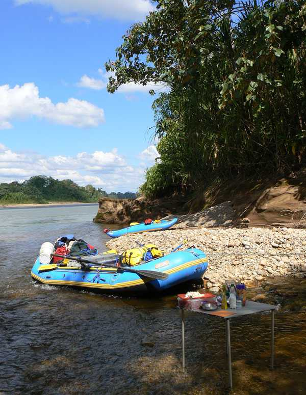
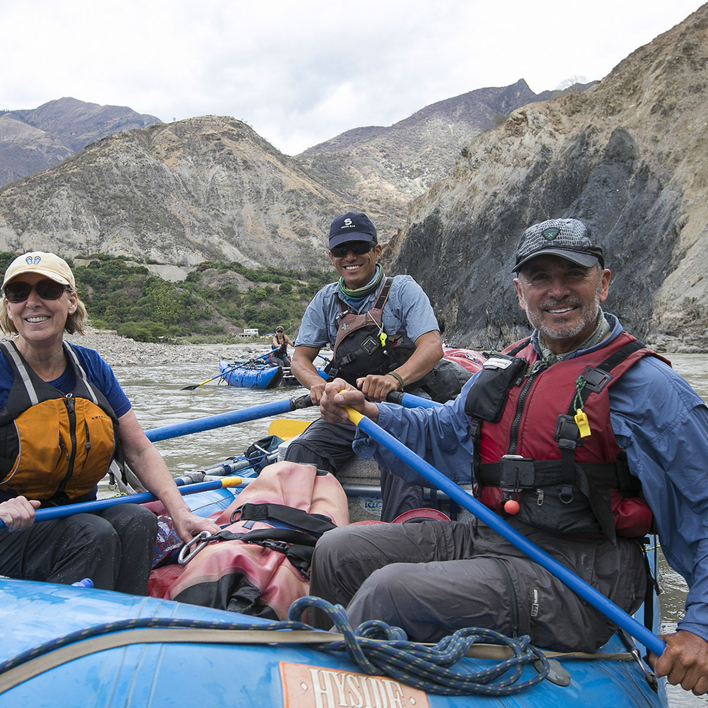
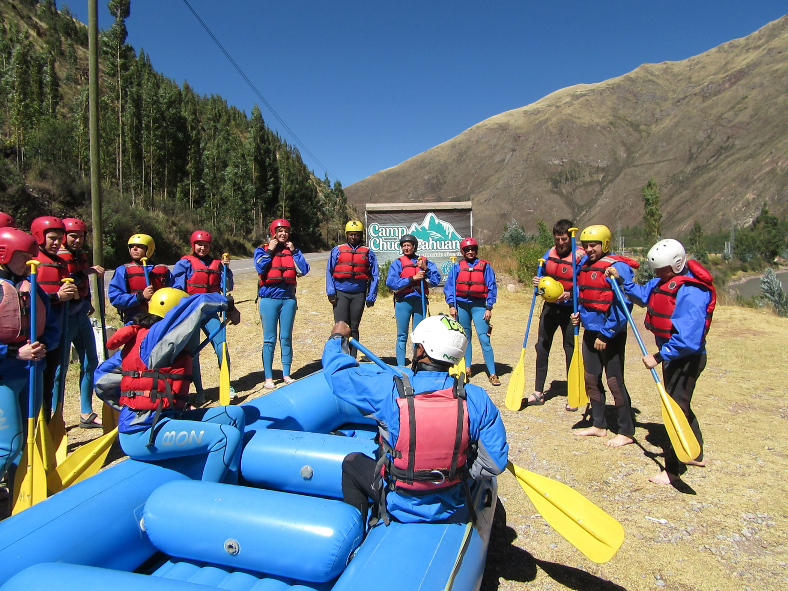

Some of our trips!
Headwater of the Amazon Jungle Rafting 8 Days
This exciting adventure will take us through the rainforest in one of the most remote places in Peru, in the middle of the Tambopata Candamo Natural Reserve, very close to the border between Bolivia and Brazil on the edge of the Amazon basin. In this expedition you will be able to know a little of what the Tambopata Reserve offers you, dare to live exciting experiences that you will only be able to enjoy with Peru rafting, travel agency specialized in adventure trips and rafting in all Peru.
Our adventure begins in the city of Cusco; we will transport ourselves in our private transport in the middle of Andean landscapes always appreciating traditional towns and beautiful natural landscapes which will turn into green tropical forests as well as the climate will change from cold to warm, this is where our adventure begins and we are prepared to enjoy the excitement of knowing Peru in this tour.
Hearth of the Marañon
The Marañón River is one of the most important water sources in Peru and a key Amazon tributary. With its source at the Nevado de Yapura glacier high up in the Andes mountains, the Marañón runs northwest through Peru along the eastern base of the Andes before it turns eastwards to flow into the Amazon plains. The Marañón meets the Ucayali River and together they form the Amazon River.
The river runs through 10 distinct regions of Peru. Almost 14% of the Peruvian population lives in these regions, and they include Andean peasants, indigenous Amazon peoples, riparian populations, as well as urban communities. Hundreds of thousands of people depend on the Marañón River for their livelihood.
Urubamba River Rafting 2 Days
The Urubamba river runs from the high Andean ranges down through the Sacred Valley of the Incas, past Machupicchu and into the jungle. It has some exciting white water depending on the section of the river being done and the time of the year. One of our most popular rafting sections during the season is the Chuquicahuana “Chuqui” class III sections on the Upper Urubamba river. There are good class III rapids and the water is not contaminated.
One of the most popular Rafting sections during the season is the Chuquicahuana Also known as “Chuqui” class IL in the Upper Urubamba River. There are good class III rapids and the water is not contaminated.
Other Trips!
| Trip Name | Location | Duration | Difficulty | Price | Book Now |
|---|---|---|---|---|---|
| River Rapids Adventure | Colorado River, CO | 3 Days | Intermediate | $499 | Book Now |
| White Water Thrills | Snake River, WY | 2 Days | Advanced | $399 | Book Now |
| Family Float Trip | Green River, UT | 1 Day | Easy | $199 | Book Now |
| Extreme Rapids Challenge | Gauley River, WV | 4 Days | Expert | $699 | Book Now |
| Scenic River Expedition | Yampa River, CO | 5 Days | Intermediate | $799 | Book Now |